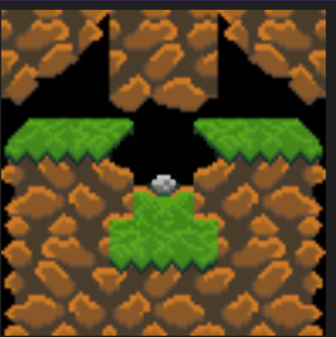

Research
SimChop
New results of volumetric simulations typically involve rendering times that are beyond the reach of using their effects in real-time graphics. Visualizing the particles and fluid surfaces with level surfaces provides a way to reduce the computations needed so that it is still possible to see other geometries interact in depth.
Learn More-

Meta Shaders
- Learn More
We present an implementation of meta-shaders by adapting a commonly known data structure to pass into shaders: planar graphs.This allows for an arbitrary flexibility in design where the faceregions that partition a surface can be individually and uniquelyshaded, or in combinations, as desired. Considering a wide variety of systems mixing 2D and 3D across multiple industries, theapplications of meta-shaders opens up a new area of design and user-interaction possibilities in computer graphics
-

Wave Function Collapse
The wave function collapse algorithm has been widely used in image processing, natural language processing, and other fields for solving constraint satisfaction problems. However, one of the major challenges faced by this algorithm is the possibility of no solution existing due to the restrictive nature of the adjacency matrix. Previous approaches attempted to resolve this issue by recomputing the wave function collapse repeatedly until a solvable solution was found. In this paper, we propose a novel ap- proach to the wave function collapse algorithm that utilizes AI image inpainting to overcome the issue of restrictive adjacency matrices
Learn More- 
Digraph Colouring
- Learn More
Several possible definitions of local injectivity for a homomorphism of an oriented graph G to an oriented graph H are considered. In each case, we determine the complexity of deciding whether there exists such a homomorphism when G is given and H is a fixed tournament on three or fewer vertices. Each possible definition leads to a locally-injective oriented colouring problem. A dichotomy theorem is proved in each case.
-